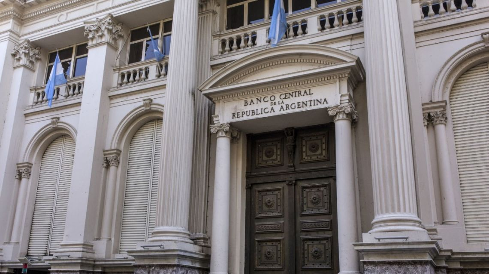

Economy | 01-10-2020 23:09
 The central Bank in Buenos Aires | Bloomberg
Argentina's Central Bank will allow a faster depreciation of its tightly-controlled peso.
The Central Bank will end a policy of “uniform devaluation” and allow greater volatility, according to a statement sent by the institution led by Miguel Pesce after hours Thursday. It also announced that it was raising repo rates to 24 percent up from 19 percent and create savings instruments with rates that exceed inflation, as it seeks to encourage Argentines to save and invest in pesos.
Authorities also plan to offer the peso at 76.95 per dollar Friday, 0.9 percent weaker than the previous session, according to a spokesman, which compares to a daily devaluation of less than 0.1 percent over the past three days. Allowing a faster devaluation is the Central Bank’s latest attempt to close the gap between the official rate and the unofficial rate, which closed Thursday at 147 per greenback.
“Raising the repo rate and abandoning the crawling peg are key, because they attack a huge inconsistency” of having low peso interest rates while maintaining a stable peso depreciation, said Diego Chameides, chief economist at Banco Galicia. “That led to a situation where few dollars were sold in the market.”
Argentina announced a slew of new measures Thursday, such as cutting taxes on certain exports temporarily, as the Central Bank is losing reserves at a faster pace in recent days, in part stemming from savers withdrawing dollar deposits from the nation’s banking system. Individual demand for greenbacks intensified after the government tightened capital controls September 15.
Total reserves fell by US$370 million on Wednesday to US$41.4 billion, the lowest level since January 2017.
The 2015-2019 Mauricio Macri administration started implementing capital controls a year ago amid a sell-off, and President Alberto Fernández has since dramatically increased them. Argentine savers may only exchange pesos for US$200 a month and must pay two taxes that total US$130 if the maximum is purchased. The Central Bank is also denying access to Argentines who receive Covid-19 financial aid directly or indirectly.
The Central Bank’s monetary policy and currency controls will be a focal point in the government’s negotiations with the International Monetary Fund for a new financing programme. IMF staff are set to visit Argentine officials next week, and again in November to discuss their policies. Government officials say they simply want to refinance the US$44 billion the nation owes to the IMF from an expired program that failed, and it’s not seeking additional funding.
As part of its measures, the central bank also said it would not activate a swap with China. Still, it will allow peso-renminbi trading for certain comex operations, and allow trading of yuan futures contracts. Retail investors won’t be allowed to trade in the Chinese currency.
Early analysis of the measures announced Thursday see them falling short of addressing the larger issues dogging Argentina. “This is the Central Bank reacting, late, to growing market pressure,” Goldman Sachs senior economist Alberto Ramos said by telephone Thursday. “The core of the problem remains the heavy monetisation of large fiscal deficits and poor policy credibility. Until that is fixed there no hope of lasting currency and price stability.“
{kind=link}
Comments